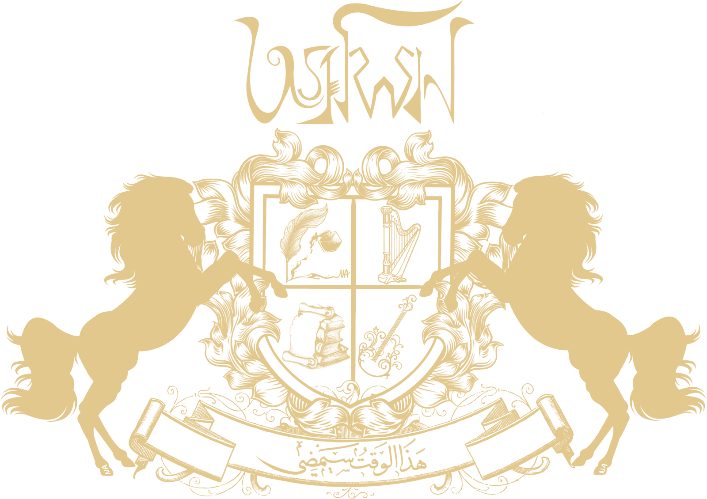
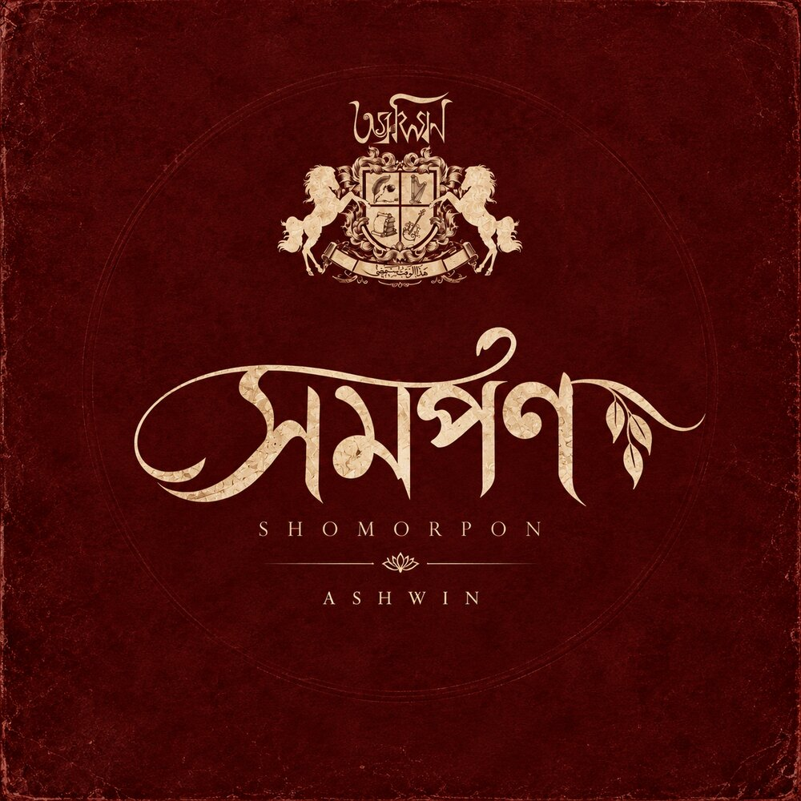

সব আলো নিভে গেলে
Shob Alo Nibhe Gele
Sung by Shanila Islam and Syed Mehedi Hasan, with backing vocal by Samir Hafiz.
Watch
A songwriting project out of Bangladesh. One of us writes the music, one of us writes the words, and the voices that join us are the reason any of it is worth hearing.
Everything else that follows is ornament. This is the engine.
Every melody and harmony begins on a guitar, then grows until it needs other people.
Bangla lyrics written to be sung, not merely read. Sometimes they come first, sometimes the melody does.
Singers, players and producers who bring a song the rest of the way, and leave it better than they found it.

Shomorpon means surrender: the giving over of oneself. The record is still being made. Two of its songs are out in the world already, both carried by the voice of Shanila Islam, both produced and arranged by Samir Hafiz.
Sung by Shanila Islam and Syed Mehedi Hasan, with backing vocal by Samir Hafiz.
WatchAn artist who gives us a song does not leave as a session credit. They stay as family. The whole point of the project is that the people who lend it their voice and their hands should get bigger for having done so. We would rather build one more career than one more single.
Two horses, a quartered shield and a line of Arabic. Nothing on it is decoration.
Read the emblem IIThe twin horsemen we are named after, in six languages. One carries medicine, one carries science.
Follow the myth IIIসমর্পণ, its two released songs and the words they are built on.
Listen and read IVThe two who start a song, and the artists who finish it.
See who we are